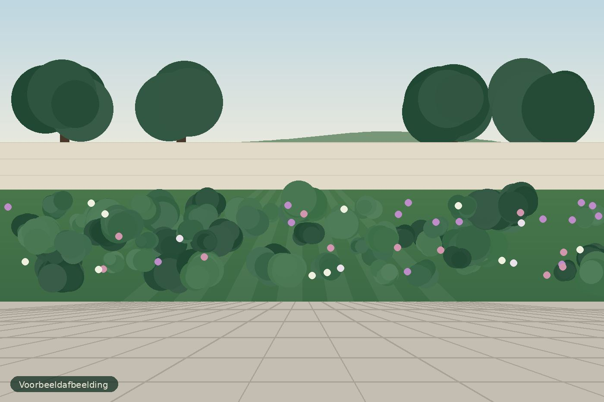
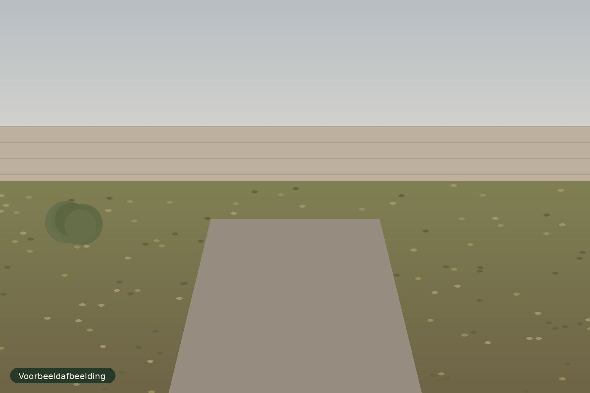

Projecten
Ons werk in beeld
Een indruk van de sfeer en kwaliteit waar wij naar streven. Klik op een foto om hem groter te bekijken.
Let op: dit zijn voorbeeldafbeeldingen. Foto's van onze eigen projecten volgen binnenkort.


Tuinrenovatie
Voor en na
Schuif over de afbeelding om het verschil te zien. Voorbeeld van een tuinrenovatie.


VoorNaBenieuwd wat we voor jouw tuin kunnen doen?
Vertel ons over je tuin en je wensen. Dan bekijken we samen de mogelijkheden.